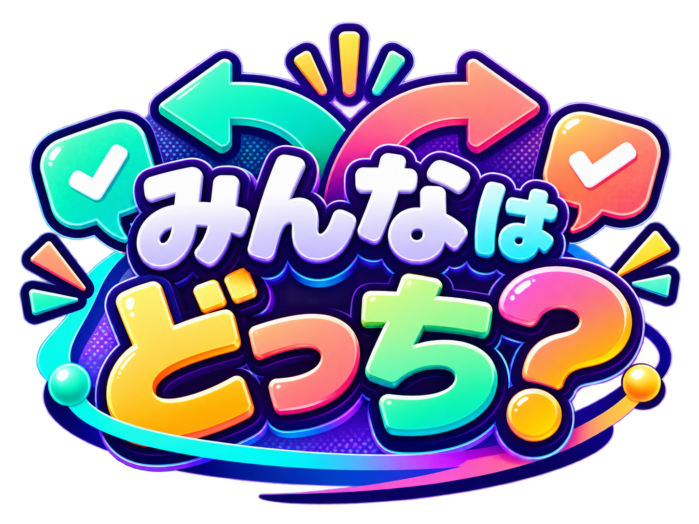

ジャンル・お題
部屋に接続中…
準備中

よみあいバトル
自分の答えが「多数派」か「少数派」か予想してポイント勝負！
A/Bに回答→多数派？少数派？→当たれば1点
ひみつ投票
誰がどっちを選んだかは最後まで秘密。人数だけ見て盛り上がろう！
匿名で回答→A○人 / B○人→正体は秘密
ホストがモードを選んでいるよ。選び終わるまで待ってね。
何問遊ぶ？
ホストがジャンルとお題を準備中。
ゲーム開始まで待ってね。
お題を準備しています…
A
VS
B
少し踏み込んだお題です。答えにくければ別のお題に変えてOK。
ホストがお題を確認中。
決まったら全員同時に回答を始めるよ。
お題を考える
今回の問題に使う2択を作ろう
お題
読み込み中…
誰がどちらを選んだかは最後まで秘密だよ。
この答えはみんなの中で……
回答と予想が完了！
ほかの人の回答を待ってね。
全員そろったら、ホストが結果を発表するよ。
全員の回答が
終わりました！
結果発表まで、まだ内緒！
A
B
みんなの回答
誰だろう？
答えを明かさず、みんなで話してみよう。
言いたくない人は最後まで秘密でOK。✓
ひみつ投票 おわり！
誰がどっちを選んだかは、最後まで秘密のまま。